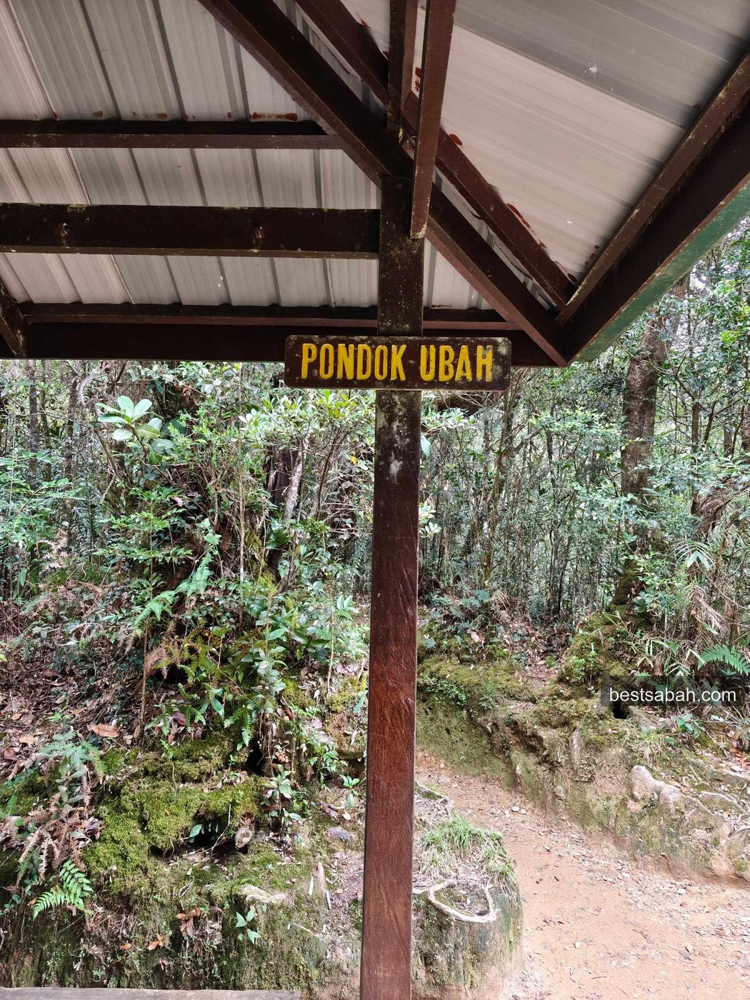
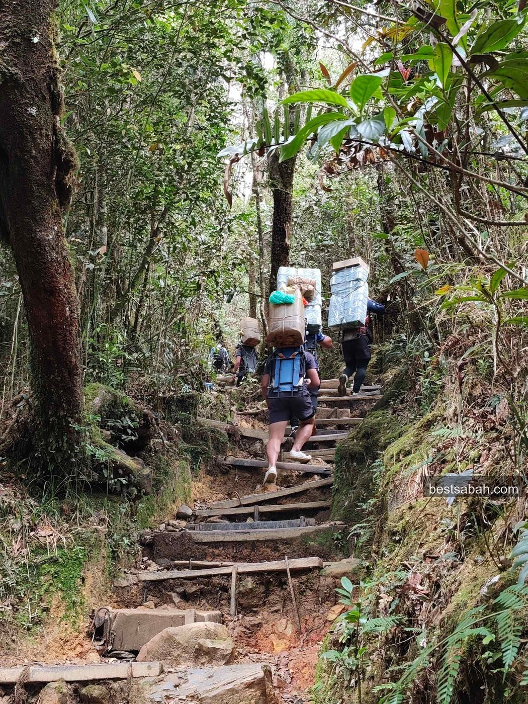
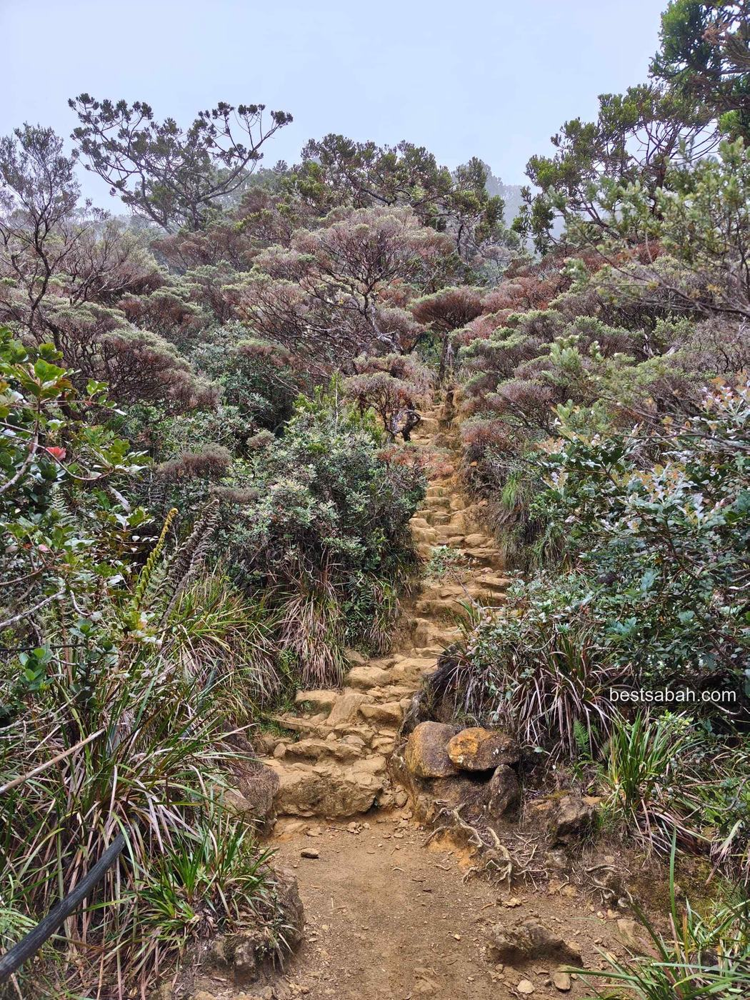
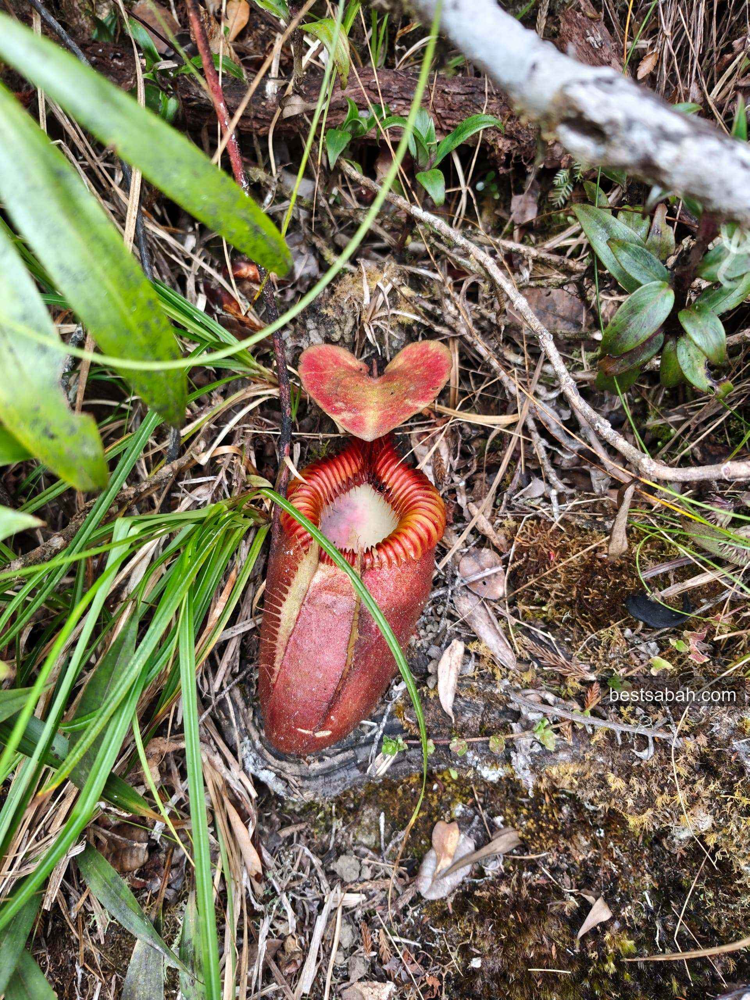
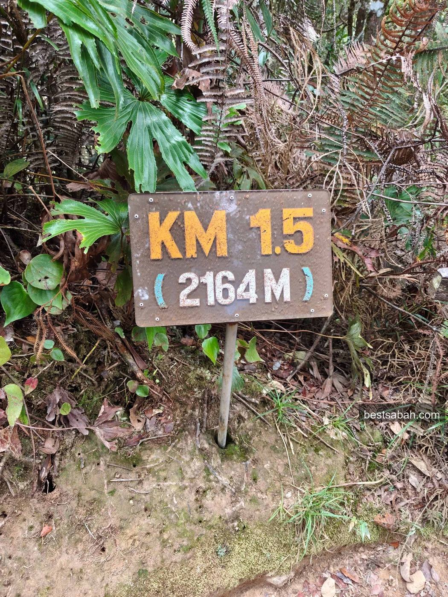
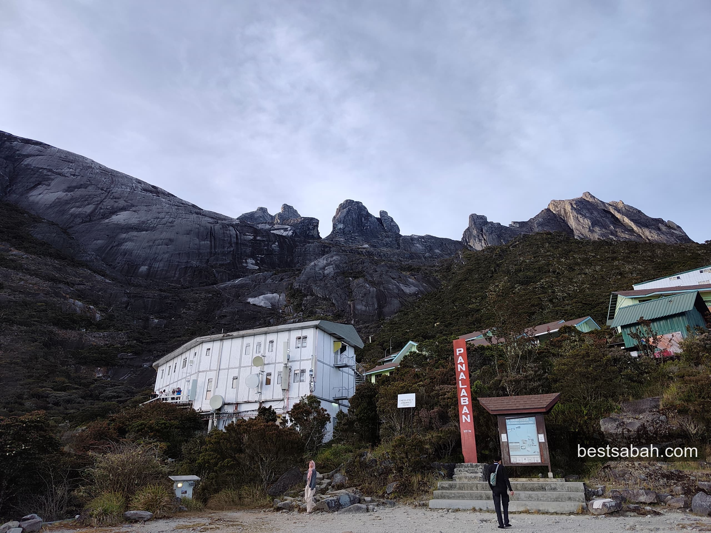
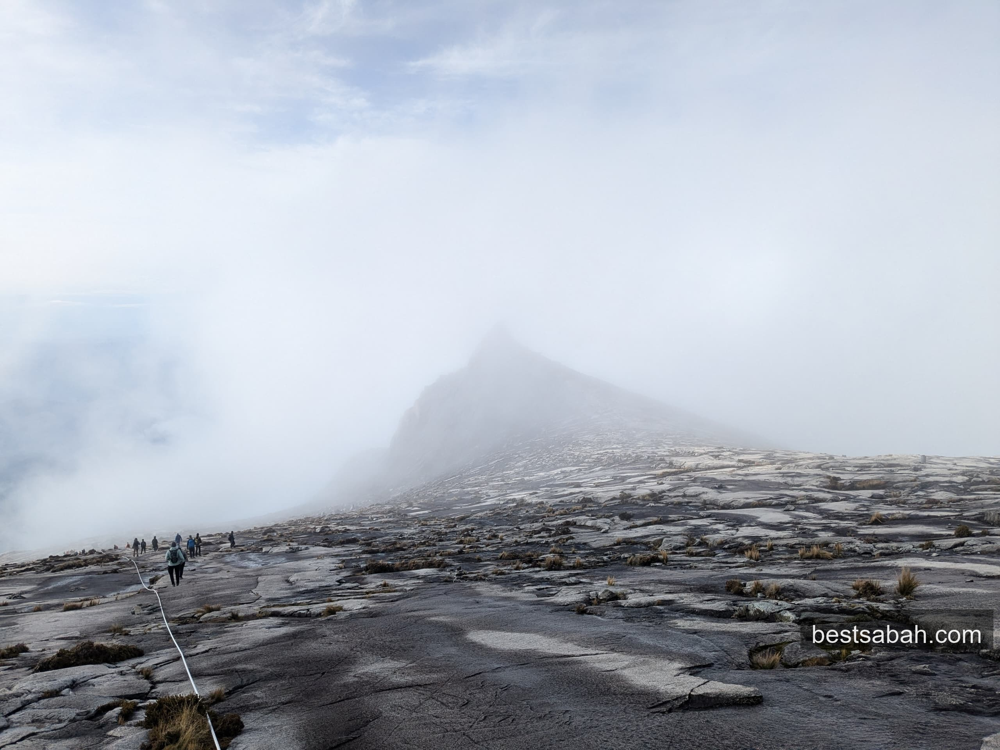
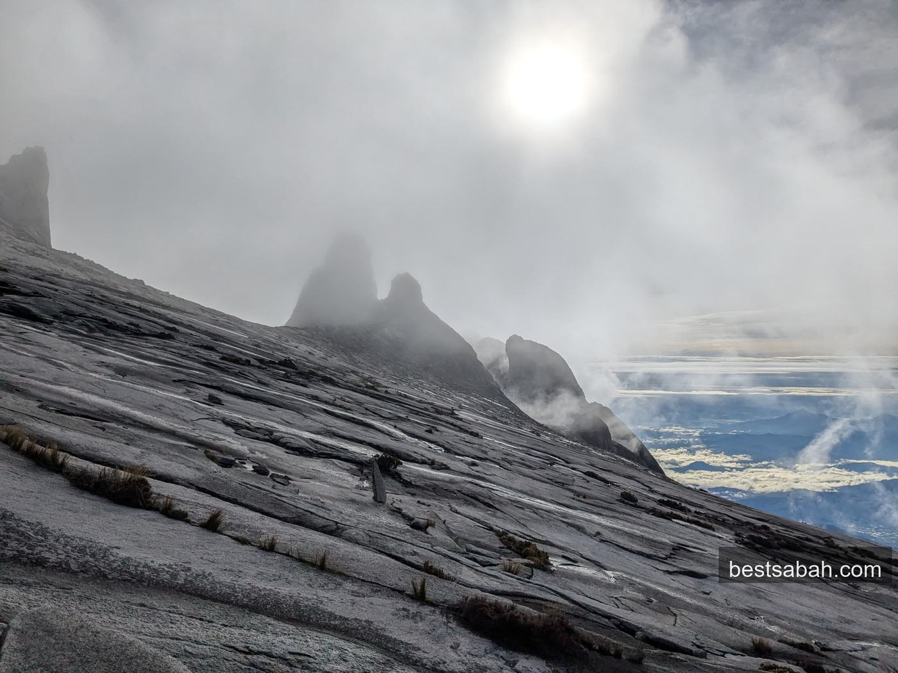

April 2026
I Climbed Mount Kinabalu. Here's Everything a First-Timer Needs to Know.
Ok I have to be honest. I live in Sabah my whole life and I only just did this. Here is everything you need to know before you go.

Been staring at this mountain from the highway, from the plane, from basically everywhere in KK. Always thought "ya ya, one day lah." Then one day I actually went and did it.
And honestly? I wish I went sooner. I really wish everyone gets to see what I saw up there at least once in their lives. Not a photo. The real thing.
What Is Mount Kinabalu
4,095 metres above sea level. Highest peak in Malaysia. One of the highest in Southeast Asia. UNESCO World Heritage Site.
Locals just call it Mount KK. Gunung Kinabalu is the Malay name. Same mountain, whatever you want to call it.
It's about 2.5 hours from KK city. The mountain sits inside Kinabalu Park and the whole place is already incredible before you even start climbing. Cloud forests, pitcher plants growing wild along the trail, granite peaks poking out from the mist. Feels like another world.

Above the clouds. This is what you're climbing towards.
People search for it a hundred ways. Climbing Mount Kinabalu, hiking Mount Kinabalu, the Mount Kinabalu trek, trekking Mount Kinabalu. It is all the same route up. And the good news: you don't need any mountaineering experience. No ropes, no crampons, nothing like that. Just your legs and a guide.
How to Book
Everything goes through the official Sabah Parks booking portal. Online only, no walk-ins.
Book here: sabapakeco.com
Pick your date, get your climbing permit, and sort out your accommodation at Laban Rata (the rest house at 3,270m where you sleep on night one). Everything is on that site.
Daily slots are limited so book early. Peak season is March to August and spots fill up fast, like 3 to 6 months in advance fast.
If Mount Kinabalu is the centrepiece of your Sabah trip, sort this part first and plan everything else around it. The mountain slots are the bottleneck, not your flights or hotels.
What's included in the package:
- Climbing permit
- Mandatory mountain guide (required, max 5 climbers per guide)
- One night at Laban Rata
- All meals at the rest house
- Kinabalu Park entrance fee
- Summit certificate when you make it to the top
Budget around RM1,150 and above per person for the 2026 standard 2D1N package. Exact rates update from time to time so check sabapakeco.com for the latest. Porters are optional if you want to climb lighter.
Don't want to sort the logistics yourself? Plenty of KK operators sell Mount Kinabalu packages and tours that bundle the permit, guide, Laban Rata stay, meals, and pick-up from the city into one price. Handy for a first-timer who just wants everything booked in one go. A Mount Kinabalu climb package usually costs more than booking direct, so compare what's actually included before you pay.

Pondok ubah. Rest for the soul.
When to Go
Best months are February, March and April. Driest weather, clearest skies, best chance of a clean view at the summit.
March to September is generally the safe window.
Try to avoid October to January if you can. That's monsoon season and it gets wet up there. On bad days the summit gate actually closes. You could make it all the way to Laban Rata and still not summit. So yeah, plan around the weather.
That said, the mountain does what it wants. Pick good months, prepare for anything.
Training
Please don't skip this part. It's not Everest but 8.7km straight up to 4,000m is no joke. Start training at least 8 to 12 weeks before your climb.
What actually helps:
- Stair climbing. Seriously. Find a tall building and just go up and down. The trail is basically stairs for 8km so this is the best prep you can do.
- Hike Signal Hill or Bukit Padang. Get your legs used to uneven ground.
- Any cardio that keeps your heart rate up for 45 minutes. Running, cycling, whatever you enjoy.
- Practice with your backpack on. You'll be carrying 5 to 7kg so get used to it before the day.

The porters make it look easy. They've done this hundreds of times.
At altitude around 3,000m your lungs have to work harder. Headaches are common at Laban Rata. Walk slow, pace yourself. Your guide will tell you jangan laju-laju. They mean it.
Kampung Adidas
Ok this one is fun.
Before you spend RM400 on fancy hiking boots, locals here have been climbing Kinabalu in Kampung Adidas for decades. These are cheap black rubber shoes, RM10 to RM15 at any hardware store or pasar malam in KK. Four stripes, looks like something your uncle wears to the garden.
But they are genuinely great for this climb. Waterproof, lightweight, amazing grip on wet granite and muddy trail. Climbathon winners have won races in these shoes. The mountain guides wear them. The porters wear them with 20kg on their backs.
Find them at hardware shops, sundry stores, pasar malam, or outdoor shops in Wisma Merdeka and Suria Sabah. Get half a size up because you'll be wearing thick socks.
Kampung adidas ja sudah lah.
Day 1: The Climb Up
Pick-up from KK city around 6AM, reach Kinabalu Park HQ by 9AM. Register, meet your guide, get your lanyard permit. Wear it the whole time.
Trail starts at Timpohon Gate at 1,866m. About 8.7km to Laban Rata at 3,270m. Most people take 4 to 6 hours depending on pace.
First few kilometres are forest. Cool air, everything smells incredible, you can hear rivers somewhere below. Then slowly the trees get shorter and stranger. Pitcher plants start appearing along the trail. Everything changes the higher you go.

Up and into the clouds you go.

Pitcher plants growing right along the path. You'll see plenty of these.
The KM markers become everything. KM 2. KM 3. KM 5. Each one feels like a small win. Stop at the shelters along the way, eat your snacks, drink water even if you don't feel thirsty.

KM markers become your best friends. Each one is a win.
By the time you reach Laban Rata your legs are cooked. Eat dinner, shower if the hot water cooperates, and sleep early. Your alarm is set for 2AM.

Laban Rata at dusk. Rest well. 2AM comes fast.
Day 2: Summit Push
This is the part that stays with you forever.
2AM. Cold and dark. Headlamp on. Head might be pounding a bit. Legs definitely still sore. You put on every layer you brought and follow your guide out into the dark.
From Laban Rata it's 2.7km to the summit. This stretch is the hardest part of the whole climb. Above the treeline now, just bare granite. You're holding a rope that's bolted into the mountain, pulling yourself up in the pitch black, wind in your face, lungs working.

Summit plateau in the early morning. Almost there.
Then the sky starts to change. Black turns to dark blue. Dark blue turns to grey. Grey turns to pink and orange.
And then you're at the top.
4,095 metres. Low's Peak. Above the clouds. Every direction is sky. Below you there's just a sea of white stretching all the way to the South China Sea. The granite spires standing around you like they've been there waiting.

Sunrise through the spires. No filter. No edit.
I can't really put into words what it felt like standing up there. You feel very small. And somehow that makes you feel really, really alive.
I kept thinking about all the people I know who haven't seen this. I genuinely wish I could bring everyone up here. Even just for five minutes. This view, man. It belongs to everyone.
The Via Ferrata, If You Want More
Here's something a lot of first-timers don't know. Mount Kinabalu has the highest via ferrata in the world. Via ferrata is Italian for "iron road." It's a set of steel rungs, cables, and rails bolted straight into the rock face, so you can move across the mountainside while clipped onto a safety line with a harness.
It's run by an outfit called Mountain Torq and it starts up near Panalaban, on the way down from the summit. Two options: the shorter Walk the Torq, and the longer Low's Peak Circuit, which is the more demanding one. You book it separately, on top of your normal climb, and there's a minimum age plus a bit more cost.
Honestly? For most first-timers the normal climb is already more than enough. But if you want the mountain to push you a little harder, the via ferrata is how you do it.
What to Pack
Keep your bag under 7kg. Every extra kilo comes back to haunt you on the descent.
- Warm jacket or fleece (summit can get below 5°C)
- Windbreaker and rain jacket
- Thermal base layer
- Headlamp and spare batteries (2AM start, no skipping this)
- Energy gels or bars for the summit push
- Electrolyte sachets
- Two pairs of thick socks
- Gloves (the summit rope is freezing)
- Panadol or ibuprofen for altitude headaches, buy before you go, it's expensive on the mountain
Your phone camera is enough. Leave the heavy gear at home.
The Descent
A lot of people forget this part exists. Coming back down takes 3 to 4 hours and your knees will feel every single step. Go slow, trekking poles help a lot here.
By the time you're back at the bottom your legs are completely done. And you are going to be very hungry. If you are heading back to KK city, stop by Yu Kee for bak kut teh on the way in. Hot herbal broth and slow-cooked pork after a descent like that. Makes sense lah.
But you just climbed the highest mountain in Malaysia. Worth it lah.
I grew up here and I kept putting this off. Don't be like me.
If you're from Sabah, this is something you owe yourself. If you're visiting Sabah, skip nothing else but don't skip this. More than any beach, any island, any sunset. Of all the places to visit in Sabah, this is the one.
Go climb the mountain. Book at sabapakeco.com.